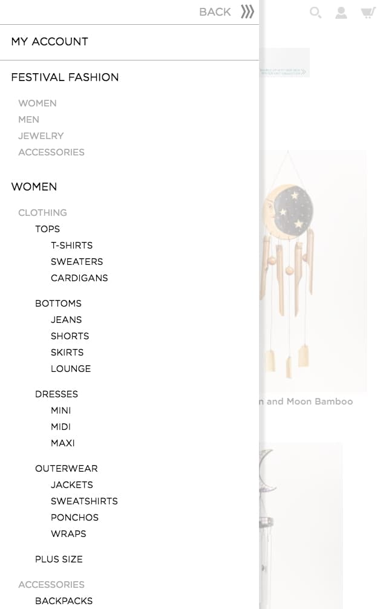

Nav redesign
www.earthboundtrading.com
The navigation menu was in need of modern functionality and accessibility.
Desktop

Mobile

The challenge
The user problem: When the site first launched three years ago, the menu navigation flow was deep. We found pageviews were extremely low on third and fourth tier page categories. The navigation lacked responsiveness especially on mobile where so many visible categories made the nav too long.
The solution: A meganav.
Old Desktop

Old Mobile
Research and discovery
UX lab discovery:
Role: Follow-up interviewer and recording analyst.
Methods: Retrospective Probing, screen recordings and surveys.
I partnered with a member from the eCommerce team to put together the first UX testing lab. My partner and I created a test, a procedure, and a report. The test focused on the usability of our navigation menu.
Our results showed that a majority had trouble successfully finding products in their initial effort or gave up and used the search function.
Researching the competition: Some of our competitors continue to practice deep navigation, but others consistently embraced the mega nav. The mega nav would meet our need to bring deep categories to the front. By adopting this modern approach, new problems presented themselves.
Categoriztion issues: Our product range is wide. I was concerned about how to display like and unlike categories in a shared space.
My research presented the need for a rule to keep the first tier navigation consistent for users. Research showed that inconsistent behavior of navigation menus led to user confusion, therefore all first tier categories could not just be a link with no dropdown. I also wanted to reduce unpredictable technical bugs.
Sketching wireframes
After presenting initial sketches to stakeholders, there was push back on my rule to never to allow first tier navigation to change. Stakeholders required unique campaigns to get the highest visibility.
I compromised by making an exception to one dedicated menu that could change. As a developer, I emphasized the importance of avoiding unexpected results.
All about context: We considered a primary user persona; who is deal-driven and thrifty, to keep 'Sale' a prevalent and accessible category.
Ideation #1: Meganav with stacked related columns.
Ideation #2: Include nav images.
Solutions to unchangeable processes.
Earthbound's business model is sale driven and I knew despite what research says about not overusing promos, this was not a battle I would ever win.
I pitched the use of nav images to lighten areas on the site that are promo heavy. The homepage in particular is the main area to display promos. Using nav images to promote low pageview categories or special campaigns was a welcomed solution from stakeholders.

Desktop Strategy: I came up with a design system for CMS admins to follow that would keep the content organized. Relevant content should be in the same column or side by side. Any second tier categories that have no children were to go in the last content column or at the bottom of a relevant column.
Collapsing to the rescue!

What about search?
Mobile Strategy: Collapsing three tiers of menus was a challenge, but it was also standard practice amongst competitors.
I used neutral background color variation to differentiate between second and third tier menus. Second or third tier categories with no children naturally did not have an expandable icon.
To keep the header uncluttered I needed to move an icon somewhere else. After going through our analytics, I found that 'My Account' was the least likely path users took to enter their account. Most of the time users entered their account through a form in the checkout process. The best possible place to move 'My Account' was within the nav menu.
Animation
Desktop hovers and timers
After consulting the design team about branding standards and testing a few interactions with coded prototypes I decided to incorporate our brand standard blue as an underline because it is a site-wide pattern.
In testing users were confused when the menu opened as they scrolled over it to a different destination. I delayed the drop-down menu by .2s to prevent it from opening when the user does not intend to. I added a .3s time event on the slideout to make the whole animation feel casual and natural.
Mobile touch
My research showed that slide out menus are prevalent on mobile navigations and this strategy was right for this project too.
Admin challenge
It was a challenge to design around a fluctuating number of categories and levels. Accordions are prevalent on mobile navigation and this was the best design and technical solution because it is a pattern on the site.
What about search? From a development standpoint, I knew the search menu would conflict with the nav menu on both desktop and mobile.
After digging in our analytics, it was apparent most users search initially or when they give up hunting in the menus. The search became the highest layer when the nav and search are active.
Learnings
Even with best intentions and planning for flexible fail safe solutions, you can't forsee every outcome when its out of your control. The navigation continuously changes in the CMS admin, which means content standards are not always followed. As a developer who troubleshoots all front end bugs I learn and track news ways admin users find to break the navigation.